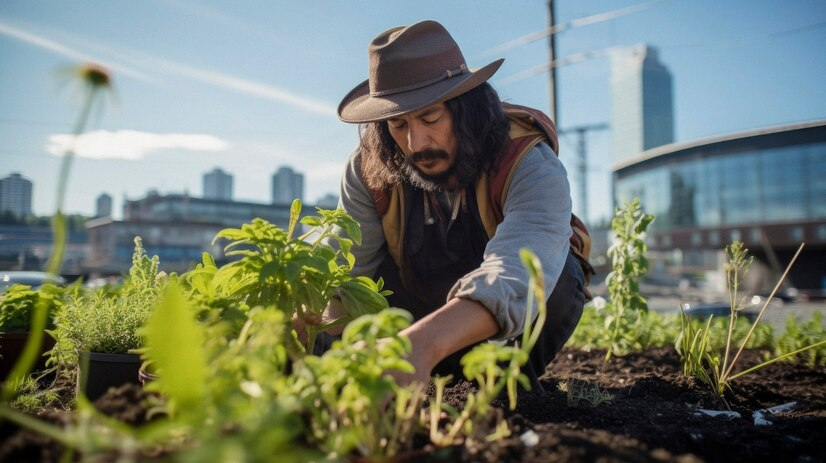
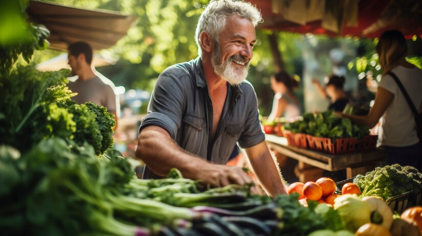
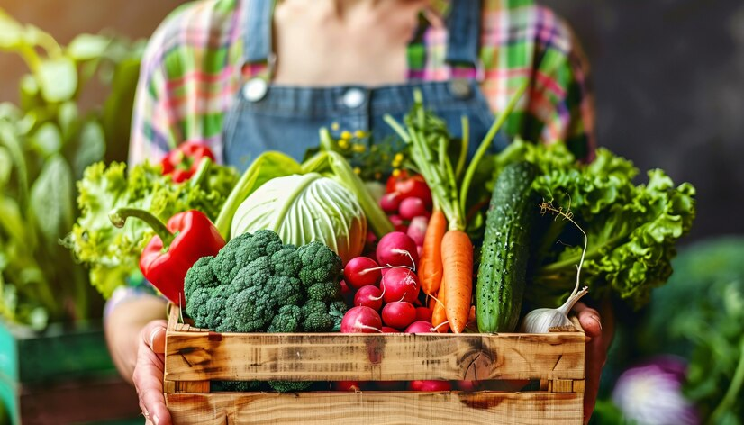
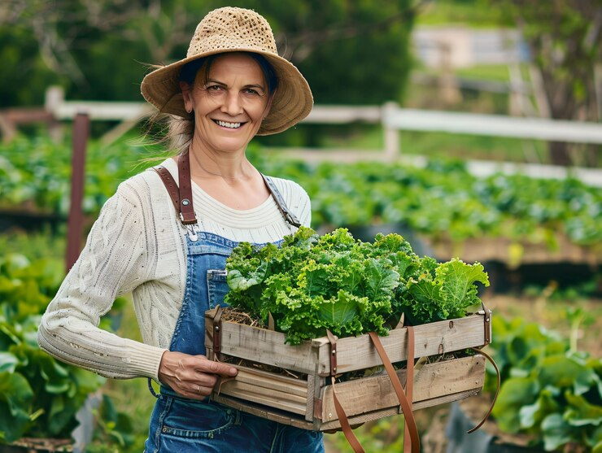
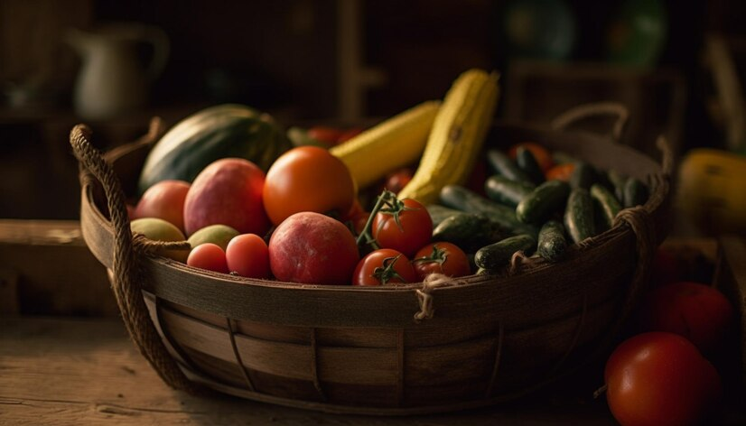
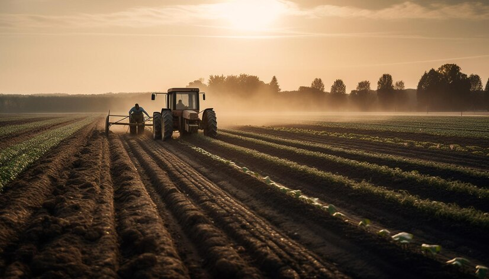

Agricultura
Esta página está diseñada para proporcionar a los agricultores, estudiantes y entusiastas de la agricultura la información y los recursos necesarios para mejorar sus prácticas y contribuir a un futuro más sostenible

La agricultura es la práctica de cultivar plantas y criar animales para obtener alimentos, fibras, medicinas y otros productos que se utilizan para sustentar y mejorar la vida humana. A continuación, te proporciono una visión general sobre la agricultura:
Historia de la Agricultura
- Revolución Neolítica:La agricultura comenzó hace unos 10,000 años durante la Revolución Neolítica. Las primeras civilizaciones agrícolas se desarrollaron en el Creciente Fértil, que abarca partes del actual Irak, Siria, Líbano, Israel, Palestina, Jordania y Egipto.
- Desarrollo de Técnicas:Con el tiempo, se desarrollaron técnicas como la rotación de cultivos, el arado y la irrigación, lo que permitió aumentar la producción y la eficiencia.

Tipos de Agricultura
- Agricultura de Subsistencia:Los agricultores cultivan alimentos principalmente para el consumo de sus propias familias, con poco excedente para la venta.
- Agricultura Comercial: Se cultivan productos para la venta en mercados locales e internacionales. Se caracteriza por el uso de tecnología avanzada y la producción a gran escala.
- Agricultura OrgánicaEvita el uso de pesticidas y fertilizantes químicos, centrándose en métodos naturales para cultivar alimentos.
- Agricultura SostenibleSe enfoca en prácticas que protegen el medio ambiente, mantienen la biodiversidad y utilizan los recursos de manera eficiente.




Principales Productos Agrícolas
- Cereales:Trigo, maíz, arroz, cebada, avena.
- Legumbres:Soja, frijoles, lentejas, garbanzos.
- Hortalizas: Papas, zanahorias, tomates, cebollas.
- Frutas:Manzanas, naranjas, plátanos, uvas.
- Productos Animales:Carne, leche, huevos, lana.

Tecnología en la Agricultura
- Maquinaria Agrícola:Tractores, cosechadoras, sembradoras.
- Biotecnología:Uso de organismos genéticamente modificados (OGM) para mejorar la resistencia a enfermedades y aumentar la productividad.
- Drones y Sensores:Monitorización de cultivos, aplicación precisa de fertilizantes y pesticidas.
- Sistemas de Irrigación:Métodos como el riego por goteo que optimizan el uso del agua.

Retos de la Agricultura
- Cambio Climático:Afecta los patrones de cultivo, la disponibilidad de agua y aumenta la incidencia de plagas.
- Degradación del Suelo: La sobreexplotación y el uso de técnicas no sostenibles pueden llevar a la pérdida de fertilidad del suelo.
- Seguridad Alimentaria:Garantizar que toda la población tenga acceso a alimentos nutritivos y suficientes.
Futuro de la Agricultura
- Agricultura de Precisión:Uso de datos y tecnología para optimizar cada aspecto de la producción agrícola.
- Cultivo Vertical:Producción de alimentos en estructuras verticales para ahorrar espacio y recursos.
- Innovaciones en Biotecnología:Desarrollo de cultivos más resistentes y nutritivos.